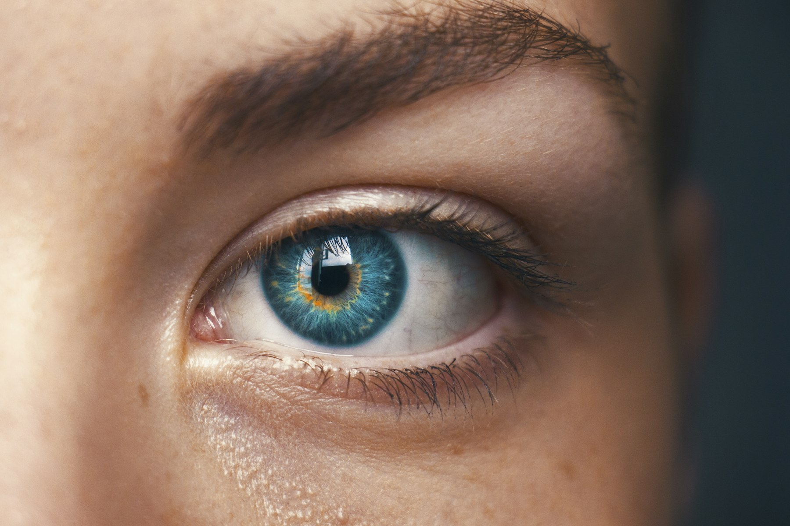
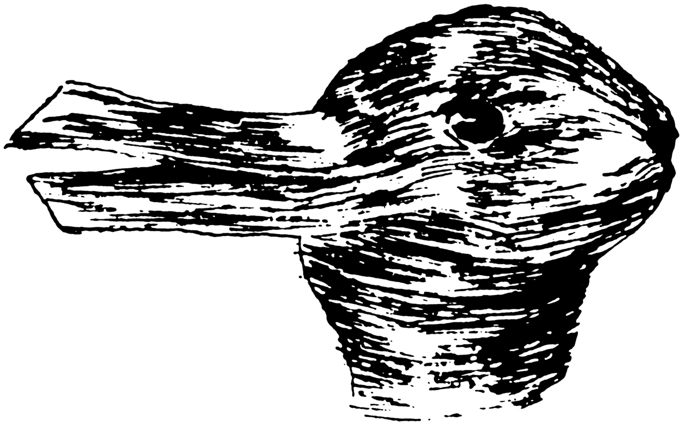
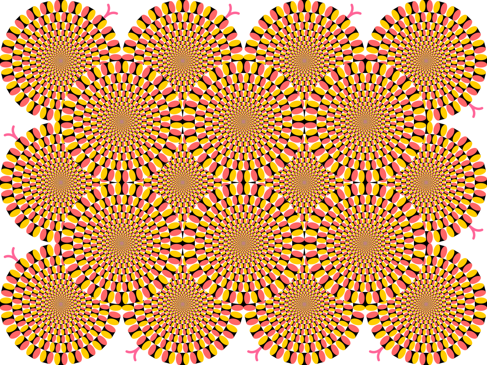
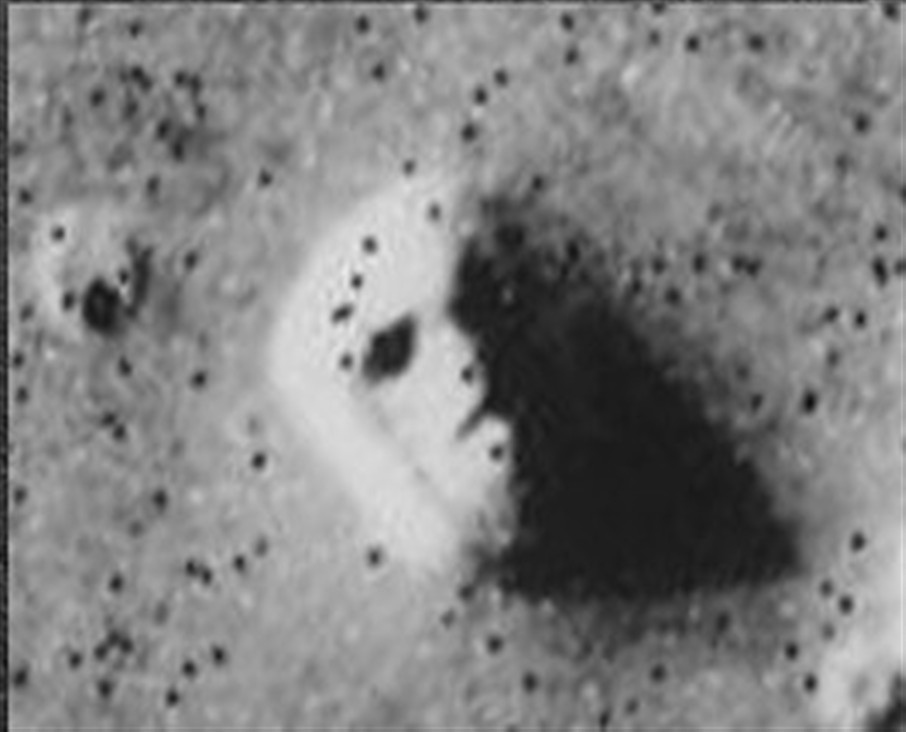
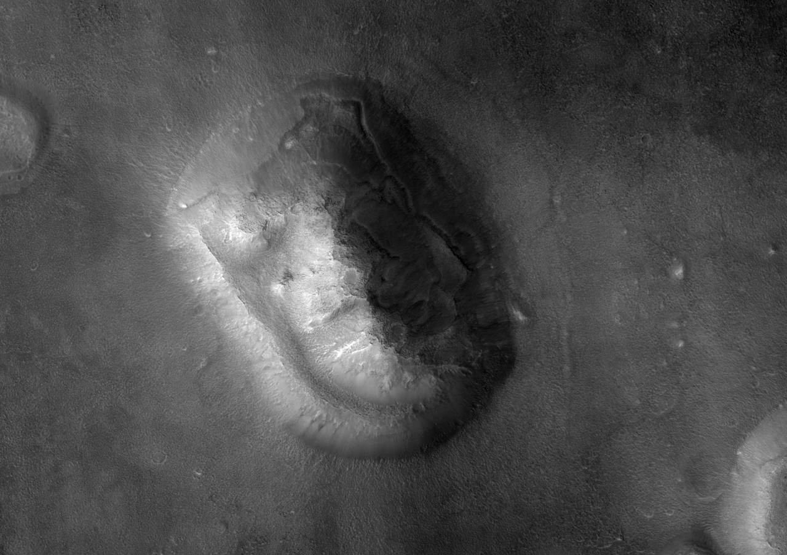
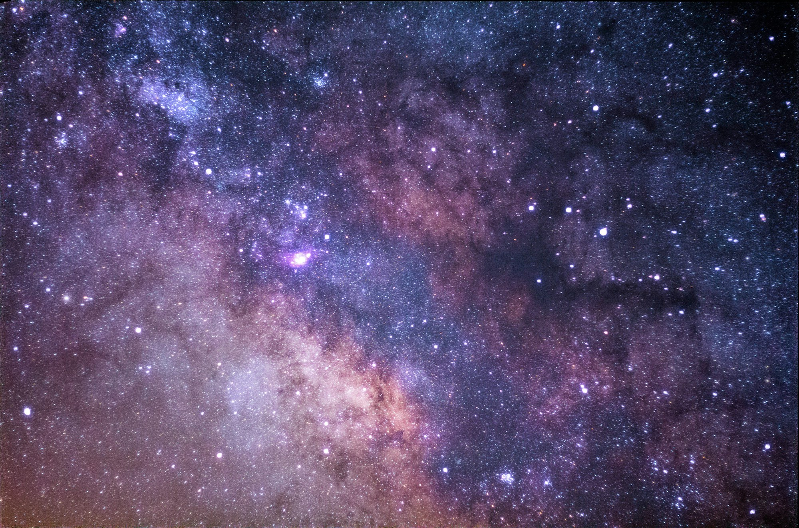

مباشر
لن تصدق ما حدث في تلك الليلة… والحقيقة مخفية في التفاصيل.
أنت معناليست عن الصور التي تُزيَّف… بل عن العقل الذي يمنحها التصديق.

هذه ليست بطة ولا أرنبًا. إنها خطوط… وأنت من يمنحها الهوية. الدماغ يثبّت تفسيرًا واحدًا، ثم يخفيه عنك.
اختر تفسيرًا… ثم جرّب أن ترى الآخر. هل استطعت؟ هذا هو الجهد الذي يبذله عقلك كل يوم ليختار لك عالمًا واحدًا.
DUCK–RABBIT · Jastrow, 1899

المنقار الأذنانلا يوجد مثلث في هذه الصورة. فقط ثلاث دوائر مقطوعة. لكن دماغك يرسم الحواف… لأن رؤية شكل ناقص أهون عليه من رؤية لا شيء.
KANIZSA TRIANGLE · 1955
المربعان A و B يحملان القيمة نفسها بالضبط. لكن B يبدو أفتح… لأنه يقع داخل ظل. دماغك لا يقيس اللون، بل يطرح الظل أولًا.
ADELSON’S CHECKER SHADOW · 1995
هذه الصورة ساكنة. تمامًا. لكن حين تتحرك عينك فوقها، يقرأ الدماغ التغيّر كأنه دوران. ثبّت نظرك على النقطة… وستهدأ الدنيا.
ROTATING SNAKES · Kitaoka, 2003

STILL IMAGE · 0 FPSملف PNG واحد. لا إطارات. لا فيديو.
في 1976 رأى العالم وجهًا على المريخ. صورة رديئة، ظلّ، ورغبة في المعنى. صورة أوضح لاحقًا قالت شيئًا آخر: صخرة.
VIKING 1 · MARS GLOBAL SURVEYOR / NASA-JPL

1976
2001اسحب أو اضغط لقلب الصورة.
نفس الصورة… ثلاث حكايات. حرّك الإطار، ولاحظ كيف يتبدل البطل: رجل، مكان، أو وحدة.
“لا تكذب الصورة…
الكادر هو الذي يروي.
SAME PIXELS · THREE STORIES
ثلث الصورة فقط. لكنه كل القصة. الإطار ضيّق، والعين تذهب إليه فورًا.
هذا الوجه لم يُصوَّر. لم يولد. لم يوجد. صنعه نموذج في ثوانٍ… وأنت منحته الثقة في أجزاء من الثانية.
STYLEGAN · THIS PERSON DOES NOT EXIST
صورة كاملة… بلا شخص.
عيّنات قصيرة من صوتك قد تكفي لتقليد نبرتك. ومعها صورة… تكتمل الثقة. الخدعة لا تحتاج إلى كمال، بل إلى ما نعرفه.
VOICE CLONING + FACE SWAP · محاكاة توضيحية
الصورة ليست الخدعة. الخدعة هي الطبقات التي نلفّها حولها. فعّل الطبقات… وشاهد كيف تتحول صورة عادية إلى حقيقة يصعب إنكارها.
لن تصدق ما حدث في تلك الليلة… والحقيقة مخفية في التفاصيل.
أنت معناكل طبقة صغيرة. مجموعها كارثة.
الحصانة ليست أن ترى كل شيء. هي أن تعرف متى تتوقف قبل المشاركة. خمسة أسئلة… قبل زرّ الإرسال.
SOURCE · DATE · CONTEXT · ORIGINAL · INCENTIVE
الصورة ليست دليلًا. سياقها هو الدليل.

أخطر صورة… هي التي لا تشكّ فيها.
العين لا تكذب…
لكنها تُخدع.
والعقل لا يرى… بل يصدّق.
المراجع: Jastrow 1899 · Kanizsa 1955 · Adelson 1995 · Kitaoka 2003 · NASA/JPL · StyleGAN
كل الشرائح تفاعلية. حرّك المؤشر، اسحب، واضغط على العناصر الذهبية.
للطباعة أو حفظ PDF: Ctrl / Cmd + P